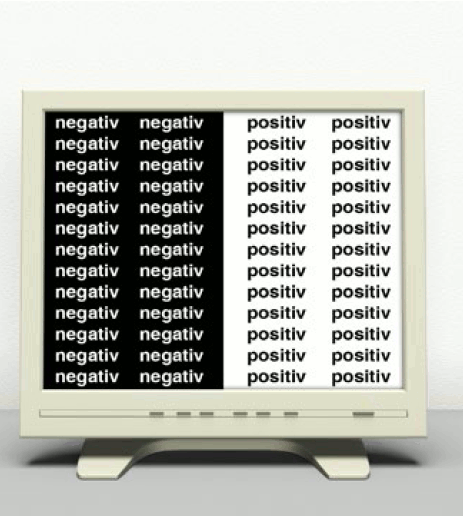
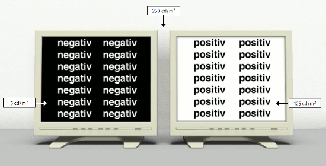
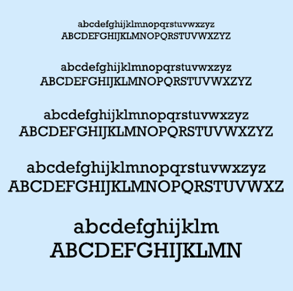
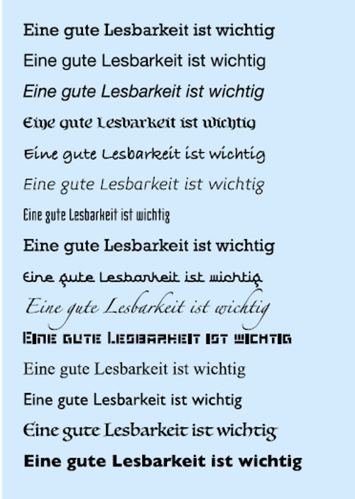
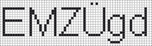
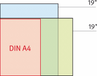
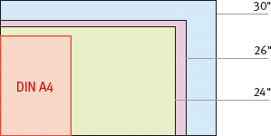
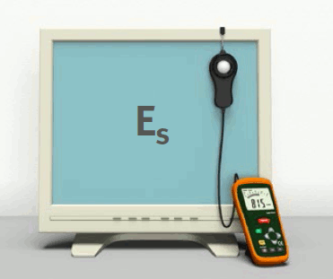
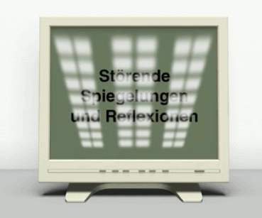

Im Bürobereich finden zwei Bildschirmanzeigetechniken Verwendung, nämlich Kathodenstrahlröhrenanzeigen (CRT) und Flüssigkristallanzeigen (LCD). Dabei spielen CRT-Bildschirme eine immer geringere Rolle, bei Neuanschaffungen werden fast ausschließlich LCD-Bildschirme gewählt.
Im Gegensatz zu CRT-Bildschirmen, deren optische Eigenschaften von der Sehrichtung weitgehend unabhängig sind, ändern sich bei LCD-Bildschirmen abhängig von der Sehrichtung Leuchtdichte (Helligkeit der Anzeige), Kontrast und Farbe. Die Ausprägung dieser Abhängigkeit hängt davon ab, welcher LCD-Typ eingesetzt wird (Tabelle 2).
Um die Abhängigkeit der optischen Eigenschaften von LCD-Bildschirmen zu differenzieren, nimmt die Norm DIN EN ISO 9241-307 eine Einteilung in vier Sehrichtungsbereiche vor (Tabelle 3, Abbildung 8).
| LCD-Typen im Vergleich | |||
| TN | IPS/SIPS | MVA/PVA | |
| Kontrast | mittel bis hoch | mittel bis hoch | mittel bis sehr hoch |
| Winkelabhängigkeit | mittel bis groß | gering | gering |
| Schaltzeiten | kurz | mittel | kurz |
| Leistungsaufnahme | gering | hoch | hoch |
| TN = Twisted Nematic IPS = In-Plane-Switching SIPS = Super In-Plane-Switching MVA = Multi Domain Vertical Alignment PVA = Pattern Vertical Alignment |
|||
Tabelle 2
| Sehrichtungsbereiche nach DIN EN ISO 9241-307 | ||
| Beschreibung | Alte Klasse nach DIN EN ISO 13406 |
|
| Bildschirm für Betrachtung durch mehrere Nutzer oder für Mehrbildschirmlösungen | ||
| Erlaubt einer Vielzahl von Benutzern oder einem einzelnen Nutzer mehrerer Bildschirme, die gesamte Bildschirmfläche beim vorgesehenen Sehabstand aus allen Richtungen zu betrachten. Bietet Gleichmäßigkeit über die gesamte Bildschirmfläche, Kopfbewegungen sind möglich. Nicht geeignet für Aufgaben, die einen engen Sehkegel erfordern – zum Beispiel Schutz von vertraulichen Daten. |
I | |
| Bildschirm für große Betrachtungswinkel oder für Mehrbildschirmlösungen | ||
| Erlaubt einem einzelnen Benutzer, die gesamte Bildschirmfläche beim vorgesehenen Sehabstand aus allen Richtungen vor dem Bildschirm ohne Abnahme der visuellen Leistung zu betrachten. Bietet Gleichmäßigkeit über die gesamte Bildschirmfläche, Kopfbewegungen sind möglich. Nicht geeignet für Aufgaben, die einen engen Sehkegel erfordern – zum Beispiel Schutz von vertraulichen Daten. |
II | |
| Bildschirm für kleine Betrachtungswinkel | ||
| Erlaubt einem einzelnen Benutzer, die gesamte Bildschirmfläche beim vorgesehenen Sehabstand von einer fixierten Position (das heißt vorgesehener Sehabstand, vorgesehene Sehrichtung vor der Mitte des Bildschirms) ohne Abnahme der visuellen Leistung zu betrachten. Bietet Gleichmäßigkeit über die gesamte Bildschirmfläche, Kopfbewegungen sind nicht möglich. Geeignet für Aufgaben, die einen engen Sehkegel erfordern – zum Beispiel Schutz von vertraulichen Daten. |
III | |
| Bildschirm für eingeschränkte Betrachtungswinkel | ||
| Erlaubt einem einzelnen Benutzer, die Mitte der Bildschirmfläche beim vorgesehenen Sehabstand von einer fixierten Position (das heißt vorgesehener Sehabstand, vorgesehene Sehrichtung vor der Mitte des Bildschirms) ohne Abnahme der visuellen Leistung zu betrachten. Erfordert Kippen und Drehen des Bildschirms, um eine gleichmäßige Erscheinung der Bilddarstellung zu erreichen, Kopfbewegungen sind nicht möglich. Sehr gut geeignet für Aufgaben, die einen engen Sehkegel erfordern – zum Beispiel Schutz von vertraulichen Daten, Geldautomat. |
IV | |
| Für manche Aufgaben ist ein enger Sehrichtungsbereich erwünscht. So kann es unerwünscht sein, dass die Mitreisenden in öffentlichen Transport-Systemen die auf dem Bildschirm dargestellte Information sehen können. Die Auswahl der Sehrichtungsbereiche ist in vielen Fällen ein Kompromiss zwischen den ergonomischen Anforderungen und der Arbeitsaufgabe. | ||
Tabelle 3
|
|
||
|
|
Abb. 8 Sehrichtungsbereiche aus Tabelle 3
| TIPP: Vor- und Nachteile von LCD-Bildschirmen | |
Zu den Vorteilen zählen:
|
Zu den Nachteilen zählen:
|
Der benötigte Sehrichtungsbereich hängt von der Arbeitsaufgabe, der Bildschirmgröße, dem Sehabstand und der notwendigen Bewegungsfreiheit des Benutzers ab.
Ein weiterer Punkt, an dem sich LCD- von CRT-Bildschirmen unterscheiden können, ist das Vorhandensein von fehlerhaften Bildelementen (Pixeln) beziehungsweise deren Teilbildelementen (Subpixeln, in der Regel in den Farben Rot, Grün und Blau). Technisch bedingt können an Pixeln/Subpixeln von LCD-Bildschirmen folgende Defekte auftreten (Tabelle 4):
| Bildelement – (Pixel-)fehler nach DIN EN ISO 9241-302 – Maximale Anzahl der Fehler je Million Bildelemente | ||||||
| Fehlerklasse | Fehlerart 1 Pixel ständig hell |
Fehlerart 2 Pixel ständig dunkel |
Fehlerart 3 Subpixel |
Häufung von mehr als einem Fehler der Fehlerarten 1 oder 2 |
Häufung von Fehlern der Fehlerart 3 |
|
| ständig hell | ständig dunkel | |||||
| 0 | 0 | 0 | 0 | 0 | 0 | 0 |
| I | 1 | 1 | 2 | 1 | 0 | 0 |
| 1 | 1 | 1 | 3 | 0 | 0 | |
| 1 | 1 | 0 | 5 | 0 | 0 | |
| II | 2 | 2 | 5 | 0 | 0 | 1 |
| 2 | 2 | 4 | 2 | 0 | 1 | |
| 2 | 2 | 3 | 4 | 0 | 1 | |
| 2 | 2 | 0 | 10 | 0 | 1 | |
| III | 5 | 15 | 50 | 0 | 0 | 5 |
| 5 | 15 | 49 | 2 | 0 | 5 | |
| 5 | 15 | 48 | 4 | 0 | 5 | |
| 5 | 15 | 0 | 100 | 0 | 5 | |
| IV | 50 | 150 | 500 | 0 | 5 | 50 |
| 50 | 150 | 499 | 2 | 5 | 50 | |
| 50 | 150 | 498 | 4 | 5 | 50 | |
| 50 | 150 | 0 | 1000 | 5 | 50 | |
| Die Pixelfehlerklasse I hat es in den Vorgängernormen der jetzigen Normenreihe DIN EN ISO 9241-3xx nicht gegeben. Im Gegensatz zu vorherigen Anforderungen wird in dieser Tabelle berücksichtigt, dass helle Subpixel stärker wahrgenommen werden als dunkle. Beispiel: Ein LCD-Bildschirm mit einer Diagonalen von 19 Zoll und einer physikalischen Auflösung von 1280 Bildelementen x 1024 Bildelementen hat insgesamt 1280 x 1024 = 1,31 Millionen Bildelemente. Die maximale Anzahl der Fehler entsprechend obiger Tabelle ergibt sich durch Multiplikation der Tabellenwerte mit dem Faktor 1,31. Häufung von Fehlern (Cluster): zwei oder mehr fehlerhafte Pixel oder Subpixel in einem Block von 5 Pixeln x 5 Pixeln |
||||||
Tabelle 4
Für Standard-Büroanwendungen ist mindestens Fehlerklasse II erforderlich, Fehlerklasse 0 wird empfohlen.
Der Bildaufbau bei LCD-Bildschirmen dauert im Vergleich zu CRT-Bildschirmen wesentlich länger. Bei LCD-Bildschirmen wird als Bildaufbauzeit die Gesamtzeit definiert, in der sich die Leuchtdichte der Anzeige von 10 Prozent auf 90 Prozent und zurück auf 10 Prozent ändert. Im Allgemeinen sollte die Bildaufbauzeit unter 55 ms, beim Einsatz des Bildschirms für die Darstellung und Bearbeitung von bewegten Bildern sogar unter 10 ms liegen.
Viele LCD-Bildschirme verfügen, ebenso wie CRT-Bildschirme, über einen analogen VGA-Anschluss (Video Graphic Adapter). Der Vorteil dabei ist die Anschlussmöglichkeit an jede vorhandene VGA-Grafikkarte. Dabei wird das digitale Signal des Rechners von der Grafikkarte in ein analoges umgewandelt und an den LCD-Bildschirm geschickt, um dort in ein digitales Signal zurückverwandelt zu werden. Hierdurch kommt es in der Regel zu Bildqualitätsverlusten. Außerdem muss bei analogem Anschluss der LCD-Bildschirm mit dem Signal der Grafikkarte synchronisiert werden, was mehr oder weniger aufwendig sein kann. Schlechte Synchronisation äußert sich zum Beispiel durch unruhiges Bild, vertikale Streifen, horizontale Streifen, Grießeln, Zeichenunschärfe.
Inzwischen verfügen sowohl viele LCD-Bildschirme als auch Grafikkarten außer über einen analogen zusätzlich über einen standardisierten digitalen DVI-Anschluss (Digital Video Interface). Bei dieser digitalen Signalübertragung entstehen keine Signal- und damit Bildqualitätsverluste. Auch eine Signalsynchronisation ist nicht notwendig.
| TIPP |
| Bei einem analogen VGA-Anschluss sollte die Synchronisation mit der Funktion "Automatische Bildjustage" im OSD-Menü (On Screen-Display) des LCD-Bildschirms auf einem weißen Untergrund durchgeführt werden. Führt dies nicht zum gewünschten Erfolg, kann eine Feinjustage an einem Linienmuster aus möglichst vielen gekreuzten, waagrechten und senkrechten weißen Linien auf schwarzem Untergrund – zum Beispiel einer leeren Tabelle – oder einem Schachbrettmuster Abhilfe bringen. |
Weitere Literatur
|
| Anhang der Arbeitsstättenverordnung Nr. 6.2 Ziffer 1 und 2 |
|
| (1) | Die Text-und Grafikdarstellungen auf dem Bildschirm müssen entsprechend der Arbeitsaufgabe und dem Sehabstand scharf und deutlich sowie ausreichend groß sein. Der Zeichen- und der Zeilenabstand müssen angemessen sein. Die Zeichengröße und der Zeilenabstand müssen auf dem Bildschirm individuell eingestellt werden können. |
| (2) | Das auf dem Bildschirm dargestellte Bild muss flimmerfrei sein. Das Bild darf keine Verzerrungen aufweisen. |
Dies wird für die Darstellung von Zeichen oder Grafiken erfüllt, wenn zur Verringerung visueller Belastungen die Anforderungen an
sowie für LCD-Bildschirme zusätzlich
eingehalten werden.
Eine gute Zeichenschärfe ist dann gegeben, wenn sie auf dem ganzen Bildschirm der Zeichenschärfe von gedruckten Zeichen möglichst nahe kommt (Abbildung 9).
Abb. 9 Unterschiedliche Zeichenschärfen
Um die maximale Zeichenschärfe zu erreichen, empfiehlt es sich, den Bildschirm in der höchsten darstellbaren Auflösung (physikalischen Auflösung) zu betreiben. Ist man gezwungen, eine nicht skalierbare Software in einer niedrigeren Auflösung – zum Beispiel vom Großrechner mit 800 Bildelementen x 600 Bildelementen – zu benutzen, so ist dies beim CRT-Bildschirm mit annehmbaren Qualitätsverlusten möglich. Auf einem LCD-Bildschirm ist die Darstellung technologisch bedingt nur dann optimal, wenn er in seiner physikalischen Auflösung betrieben wird.
Bei Verwendung nicht skalierbarer Software mit einer Auflösung unterhalb der physikalischen Auflösung eines LCD-Bildschirms gibt es in der Regel zwei Möglichkeiten der Darstellung. Entweder werden zum Beispiel nur 800 Bildelemente x 600 Bildelemente auf dem LCD-Bildschirm angesteuert und es verbleibt ein breiter schwarzer Rand um den angesteuerten Anzeigebereich, oder sie werden durch Interpolation so umgerechnet, dass eine flächenfüllende Darstellung erfolgt. Hier gibt es je nach eingesetztem Bildschirm (und Interpolationssoftware) sehr krasse Unterschiede in der Darstellung auf dem Bildschirm. Einige Bildschirme sind in der Lage, auch niedrigere Auflösungen noch relativ gut darzustellen. Bei anderen Bildschirmen können Zeichen unterschiedliche Strichstärken aufweisen oder mit starken Schatten dargestellt werden. Dies kann zu einer äußerst unscharfen Darstellung führen (Abbildung 10). Da in manchen Fällen auch deshalb kleinere Auflösungen als die physikalische Auflösung des LCD-Bildschirms benutzt werden sollen, um die Größe von sonst zu kleinen Zeichen zu verändern, sollten vor einer Kaufentscheidung möglichst alle benutzten Softwareanwendungen mit den infrage kommenden LCD-Bildschirmen und Grafikkarten geprüft werden.
Abb. 10 Darstellung auf einem LCD-Bildschirm: links in physikalischer, rechts in kleinerer Auflösung
Die Anzeigeleuchtdichte (Helligkeit der Anzeige) sollte mindestens5 100 cd/m2 betragen. Der Kontrast zwischen Zeichen und Zeichenuntergrund innerhalb eines Zeichens sowie zwischen Zeichen und Zeichenzwischenraum sollte mindestens bei 4:1 liegen. Dies gilt auch für farbige Darstellungen, nicht jedoch für die Darstellung von Bildern. Als Kontrast wird das Verhältnis der höheren Leuchtdichte (LH) zur niedrigeren Leuchtdichte (LL) bezeichnet. Die Anzeigeleuchtdichte ist bei Positivdarstellung die Leuchtdichte des Untergrundes und bei Negativdarstellung die Leuchtdichte der Zeichen.
Zeichen und Flächen, für die die gleiche Leuchtdichte vorgesehen ist, dürfen keine störenden Leuchtdichteunterschiede aufweisen. Dies gilt auch innerhalb von Zeichen. Die Darstellung dunkler Zeichen auf hellem Untergrund (Positivdarstellung) oder die Darstellung heller Zeichen auf dunklerem Untergrund (Negativdarstellung) kann auf dem Bildschirm in ein- oder mehrfarbiger Ausführung erfolgen. Für Textverarbeitung ist eine einfarbige Zeichendarstellung empfehlenswert.

Abb. 11 Vergleich zwischen Positiv- und Negativdarstellung
Aufgrund der bisherigen Erfahrungen beim Einsatz von Bildschirmgeräten bietet eine flimmerfreie Positivdarstellung bessere Anpassungsmöglichkeiten an die physiologischen Eigenschaften des Menschen und an die Arbeitsumgebung (Abbildung 11).
Positivdarstellung hat folgende Vorteile:
Falls Kodierungen von Einzelinformationen bei einfarbiger Zeichendarstellung erforderlich werden, können diese zum Beispiel durch verschiedene Schriftarten, Unterstreichungen oder unterschiedliche Leuchtdichten (Helligkeiten) in einem Verhältnis von mindestens 2:1 erfolgen.

Abb. 12 Beispielhafte Helligkeitsunterschiede bei Positiv- beziehungsweise Negativdarstellung
Weitere Literatur
|
Bei der Darstellung alphanumerischer Zeichen müssen Größe und Gestalt sowie die Abstände von Zeichen und Zeilen eine gute Lesbarkeit ermöglichen (Abbildung 13).
Gute Lesbarkeit wird erreicht, wenn zum Beispiel
 |
 |
Abb. 13 Einfluss von Schriftgröße und Schriftart auf die Lesbarkeit
Den Aufbau von Zeichen aus Bildelementen zeigt Abbildung 15.

Abb. 14 Aufbau von Zeichen aus einzelnen Bildelementen
Für normale Büroanwendungen – zum Beispiel Textverarbeitung – wird mindestens ein 19"-CRT-Bildschirm oder ein 17"-LCD-Bildschirm empfohlen. Es ist notwendig, die auf dem Bildschirm dargestellten Informationen in einer Größe und Qualität anzubieten, die ein leichtes, beschwerdefreies Erkennen ermöglichen. Dies ist für Zeichen, die unter einem Sehwinkel zwischen 22 Bogenminuten und 31 Bogenminuten erscheinen, erfüllt.
Ein Sehwinkel von mindestens 22 Bogenminuten ist gegeben, wenn die Höhe der Großbuchstaben ohne Oberlänge (Zeichenhöhe) dem vorgesehenen Sehabstand dividiert durch 155 entspricht (Abbildung 15).
|
Abb. 15 Minimale Zeichenhöhe
Ein Sehwinkel von 31 Bogenminuten (entsprechend einer Zeichenhöhe von 4,5 mm bei 500 mm Sehabstand) sollte nicht überschritten werden, weil sonst ein flüssiges Lesen sehr erschwert wird.
Ein Sehwinkel von 31 Bogenminuten ist dann gegeben, wenn die Höhe der Großbuchstaben ohne Oberlänge dem vorgesehenen Sehabstand dividiert durch 110 entspricht. Besteht die Sehaufgabe überwiegend darin, den dargestellten Text gut erkennen und lesen zu können, werden Zeichengrößen entsprechend Tabelle 5 empfohlen.
| Empfohlene Zeichenhöhe in Abhängigkeit vom Sehabstand | |
| Sehabstand (mm) | Empfohlene Zeichenhöhe (mm) |
| 500 | 3,2 bis 4,5 |
| 600 | 3,9 bis 5,5 |
| 700 | 4,5 bis 6,4 |
| 800 | 5,2 bis 7,3 |
Tabelle 5
Eine gute Lesbarkeit erfordert bei Fließtexten, dass mindestens 80 Zeichen je Zeile angezeigt werden können, und dass die übliche Groß- und Kleinschreibung angewendet wird. Ausschließliche Großschreibung ist nur für kurze Informationen sowie zur Hervorhebung von Einzelheiten geeignet.
Für die Ermittlung der Zeichenhöhe auf dem Bildschirm wird die Messfolie der VBG-Praxis-Kompakt "Software nutzerfreundlich einstellen und gestalten" empfohlen.
Der Sehabstand richtet sich eher nach der Sehaufgabe als nach der Bildschirmgröße. Werden typische Büroaufgaben, bei denen die Leseaufgabe im Vordergrund steht, erledigt, haben sich Sehabstände von 500 mm bis 650 mm bewährt.
Auch wenn solche Arbeiten an größeren Bildschirmen mit mehreren Fenstern erledigt werden, sind ähnliche Sehabstände empfehlenswert. Sehabstände von 500 mm sollten nicht unterschritten werden.
Besteht die Sehaufgabe überwiegend darin, den gesamten Bildschirminhalt auf einen Blick zu erfassen, wie in einer Leitwarte, können die in Tabelle 6 angegebenen Sehabstände empfohlen werden.
| Bildschirmdiagonale/Sehabstand (wenn der gesamte Bildschirminhalt überwacht werden soll) |
||
| Bildschirmdiagonale | Sehabstand (mm) | |
| LCD (Zoll/mm) | CRT (Zoll/mm) | |
| 13/330 | 15/380 | 500 |
| 15/381 | 17/430 | 600 |
| 17/432 | 19/480 | 700 |
| 19/483 | 21/530 | 800 |
| 22/559 WD | 900 | |
| 24/610 WD | 1000 | |
| WD = Widescreen Display = Breitformat-Bildschirm | ||
Tabelle 6
Die bisher üblichen LCD-Bildschirme im Normalformat (Seitenverhältnis 4:3 beziehungsweise 5:4) werden zunehmend durch Bildschirme im Breitbildformat (Widescreen, Seitenverhältnis 16:9 beziehungsweise 16:10) ersetzt. Dabei eignen sich Bildschirme im Normalformat besser für Standardbüroanwendungen wie Textverarbeitung, Tabellenkalkulation mit kleinen Tabellen oder E-Mail- Verkehr, während Bildschirme im Breitbildformat für Bildbearbeitung, Tabellenkalkulation mit großen Tabellen und das Arbeiten mit mehreren Fenstern besser geeignet sind.
Bei der Arbeit mit eingescannten Dokumenten wird in der Regel mit mehreren Bildschirmfenstern gearbeitet – zum Beispiel sollen neben einem eingescannten DIN A4-Dokument (Größe 297 mm x 210 mm) noch ein Bearbeitungsfenster und ein Informationsfenster dargestellt werden. Hierfür gibt es unterschiedliche Lösungen. Man kann mit zwei Bildschirmen oder mit einem Großbildschirm arbeiten.
Häufig gibt es an den vorhandenen Arbeitsplätzen bereits LCD-Bildschirme, die weiter benutzt werden sollen. Da eingescannte Dokumente wegen der oft sehr kleinen Schriftzeichen, insbesondere im Fußbereich von Dokumenten, häufig mindestens in Originalgröße dargestellt werden sollen, muss der Bildschirm zur Darstellung der Dokumente eine Mindestgröße von 17" (43 cm, Anzeigefläche circa 338 mm x 270 mm) haben und im Hochformat betrieben werden (Tabelle 7). Besser geeignet ist ein Bildschirm mit einer Diagonale von 19" (48 cm, Anzeigefläche circa 376 mm x 301 mm), da man hier Dokumente auch leicht vergrößern kann, ohne dauernd mithilfe einer Lupenfunktion Ausschnittvergrößerungen machen zu müssen, um besser lesen zu können. Der zweite Bildschirm wird dann im Hoch- oder Querformat zur Anzeige der weiteren Bildschirmfenster benutzt.
Setzt man zwei Bildschirme mit gleicher physikalischer Auflösung ein, so ist der Betrieb an einer Grafikkarte mit zwei Ausgängen unproblematisch. Für Bildschirme mit unterschiedlichen Auflösungen gibt es Grafikkarten, die in der Lage sind, zwei unterschiedliche Auflösungen zu liefern (sogenannte Dual-Head-Grafikkarten).
Bei der Zwei-Bildschirm-Lösung sollte man darauf achten, dass die benutzten Bildschirme möglichst schmale Bildschirmrahmen haben und dicht beieinander stehen, um eine kompakte Gesamtanzeige zu erhalten.
| Bildschirmparameter für LCD-Bildschirme | ||||||
| Format | Diagonale | Anzeigefläche | Physikalische Auflösung |
Pixelgröße | ||
| Zoll | mm | mm | Pixel | mm | ||
| Normalformat 4:3 beziehungsweise 5:4 |
15 | 381 | 304 x 228 | 1024 x 768 | 0,294 x 0,294 | |
| 17 | 432 | 338 x 270 | 1280 x 1024 | 0,264 x 0,264 | ||
| 19 | 483 | 376 x 301 | 1280 x 1024 | 0,294 x 0,294 | ||
| 20 | 508 | 408 x 306 | 1600 x 1200 | 0,255 x 0,255 | ||
| 21,3 | 541 | 432 x 324 | 1600 x 1200 | 0,27 x 0,27 | ||
| Größere Bild- schirme nicht mehr verfügbar |
||||||
| Breitbildformat 16:10 beziehungsweise 16:9 |
20 | 508 | 433 x 271 | 1680 x 1050 | 0,258 x 0,258 | |
| 21,1 | 541 | 454 x 284 | 1680 x 1050 | 0,27 x 0,27 | ||
| 22 | 559 | 474 x 296 | 1680 x 1050 | 0,282 x 0,282 | ||
| 23 | 584 | 509 x 286 | 1980 x 1080 | 0,265 x 0,265 | ||
| 24 | 610 | 518 x 324 | 1920 x 1200 | 0,27 x 0,27 | ||
| 26 | 660 | 551 x 344 | 1920 x 1200 | 0,287 x 0,287 | ||
| 27 | 686 | 582 x 364 | 1920 x 1200 | 0,303 x 0,303 | ||
| 27 | 685 | 597 x 336 | 2560 x 1440 | 0,233 x 0,233 | ||
| 27,5 | 699 | 593 x 371 | 1920 x 1200 | 0,309 x 0,309 | ||
| 30 | 762 | 641 x 401 | 2560 x 1600 | 0,25 x 0,25 | ||
Tabelle 7
Vorteilhaft ist es auch, wenn der im Hochformat betriebene Bildschirm über eine VA- oder IPS-Anzeige verfügt und nicht über eine stark winkelabhängige TN-Anzeige (siehe Tabelle 2 ). TN-Anzeigen werden im Hochformat von einer der beiden Seiten betrachtet nur ein dunkles, wenig kontrastreiches Bild liefern, was charakteristisch für solche Anzeigen ist. Beim Normalbetrieb im Querformat stellt man dies meistens nicht fest, es sei denn, man betrachtet den Bildschirm von unten. Leider muss man bei einer Zwei-Bildschirm-Lösung auch damit rechnen, dass trotz eingestellter gleicher Farbtemperatur und gleicher Helligkeit beide Bildschirme Farben mehr oder weniger unterschiedlich darstellen beziehungsweise sich auch in ihrer Helligkeit unterscheiden. Dies kann, wenigstens zum Teil, durch eine entsprechende Bildeinstellung kompensiert werden, vorausgesetzt auch ein älterer Bildschirm lässt sich noch so weit korrigieren, dass der Helligkeitsabfall infolge der Alterung der LCD-Anzeige ausgeglichen werden kann.
Wer diese Probleme vermeiden möchte, greift gleich zu einem Großbildschirm im Breitbild-Format.
Bevorzugt man diese Lösung, sollte man sich wenigstens für einen Bildschirm mit einer Diagonale von 26" (660 mm) und einer Anzeigefläche von typischerweise 551 mm x 344 mm entscheiden. Hier lassen sich dann mehrere Fenster unmittelbar nebeneinander darstellen.
Ähnliche Vergrößerungen von eingescannten Dokumenten, wie bei einem 19"-Bildschirm im Hochformat, lassen sich allerdings erst mit einem 27"-Bildschirm (686 mm) mit einer Anzeigefläche von typischerweise 582 mm x 364 mm erreichen (Abbildung 16).
| 5:4 |  |
16:10 |  |
Abb. 16 LCD-Bildschirmgrößen im Vergleich
Unabhängig von der eingesetzten Technik sollte man darauf achten, dass die auf den Bildschirmen dargestellten Informationen gut lesbar sind.
Weitere Literatur
|
Störende Veränderungen von Zeichengestalt oder Zeichenort durch Bildgeometrie- oder Bildstabilitätsfehler dürfen nicht auftreten.
Solche Geometriefehler, die in der Regel nur bei CRT-Bildschirmen vorkommen, kann man zum Beispiel durch Anlegen eines Blattes Papier an waagrechte oder senkrechte Linien, gegebenenfalls Rahmen, im Randbereich der Anzeige feststellen. Die meisten dieser Fehler lassen sich entsprechend den Angaben in der Bedienungsanleitung korrigieren.
Bildstabilitätsfehler äußern sich meist durch zitternde Buchstaben oder Grafiken und werden durch örtliche Leuchtdichteschwankungen erzeugt. Sie sind bei CRT-Bildschirmen entweder gerätebedingt oder werden durch äußere elektrische oder magnetische Felder hervorgerufen. Bei LCD-Bildschirmen mit analoger Ansteuerung beruhen diese Fehler meist auf einer schlechten Synchronisation zwischen Grafikkarte und Bildschirm.
Flimmern ist die Wahrnehmung von raschen, periodischen Leuchtdichteschwankungen auf dem Bildschirm, die in einem Frequenzbereich von einigen Hertz (Hz) bis zur Verschmelzungsfrequenz liegen. Die Verschmelzungsfrequenz ist die Grenzfrequenz des Auges, oberhalb der ein Flimmern nicht mehr wahrgenommen wird. Sie ist individuell verschieden und nimmt mit zunehmendem Alter ab. Flimmern wird im seitlichen Gesichtsfeld eher wahrgenommen als im zentralen Gesichtsfeld.
Bei Bildschirmen mit Kathodenstrahlröhren hängt die flimmerfreie Wahrnehmung maßgeblich vom Zusammenwirken der nachstehenden Einflussgrößen ab:
Bei einem Bildschirm mit Kathodenstrahlröhre ist in Positivdarstellung eine Bildwiederholfrequenz von mindestens 100 Hz empfehlenswert, 85 Hz sollen nicht unterschritten werden.
Technologiebedingt bietet ein LCD-Bildschirm auch bei einer Bildwiederholfrequenz von 60 Hz (in der Regel von den meisten Herstellern empfohlen) ein absolut flimmerfreies Bild.
Bei Anzeigetechniken, wie Elektrolumineszenz- oder Plasmaanzeigen, können auch andere technische Einflussgrößen für eine flimmerfreie Wahrnehmung maßgebend sein.
Weitere Literatur
|
Für eine scharfe und deutliche Darstellung auf dem Bildschirm sollen die Farben von Zeichen oder Grafiken und Bildschirmuntergrund aufeinander abgestimmt werden; störende Konvergenzfehler9 sind zu vermeiden (Abbildung 17).
Abb. 17 Konvergenzfehler
Diese Forderungen sind dann erfüllt, wenn
Farben können das schnelle Auffinden sowie das sichere Identifizieren oder Zuordnen von bestimmten Informationen erleichtern.
| Empfohlene Farbkombinationen für Zeichen und Untergrund | ||||||||
| Untergrundfarbe | Zeichenfarbe | |||||||
| Schwarz | Weiß | Purpur | Blau | Cyan | Grün | Gelb | Rot | |
| Schwarz | + | + | – | + | + | + | – | |
| Weiß | ++ | + | + | – | – | – | + | |
| Purpur | + | + | – | – | – | – | – | |
| Blau | – | + | – | + | – | + | – | |
| Cyan | + | – | – | + | – | – | – | |
| Grün | + | – | – | + | – | – | – | |
| Gelb | + | – | + | + | – | – | + | |
| Rot | – | + | – | – | – | – | + | |
| Bedeutung: + Farbkombination gut geeignet; helle Untergrundfarben (Positivdarstellung) sind vorzuziehen; nur für Bildschirme, bei denen dabei ein Flimmern auftritt, sollte eine dunkle Untergrundfarbe (Negativdarstellung) gewählt werden – Farbkombination nicht geeignet, da entweder Farborte zu nahe beieinander liegen, dünnlinige Zeichen nicht erkennbar sind oder zu hohe Anforderungen an den Scharfeinstellungsmechanismus der Augen gestellt werden |
||||||||
Tabelle 8
Die Unterscheidbarkeit von Farben (das heißt der Farbabstand zwischen zwei Farben) wird mit zunehmender Beleuchtungsstärke auf dem Bildschirm schlechter, insbesondere bei gut entspiegelten Bildschirmen. Dies trifft auch auf Leuchtdichten und Kontraste der Bildschirmanzeige zu, allerdings in schwächerer Ausprägung. Deshalb geben Hersteller inzwischen an, für welche Beleuchtungsstärke auf dem Bildschirm dieser geeignet ist. In technischen Datenblättern und GS-Zertifikaten wird dazu die vorgesehene Bildschirmbeleuchtungsstärke in Lux angegeben. Es handelt sich hierbei um die maximal zulässige Beleuchtungsstärke auf dem Bildschirm durch die Umgebungsbeleuchtung (Abbildung 18). Die tatsächliche Beleuchtungsstärke auf einem Bildschirm kann durch Auflegen eines Beleuchtungsstärkemessers (Messkopf nach außen!) direkt am jeweiligen Arbeitsplatz gemessen werden.

Abb. 18 Vorgesehene Bildschirmbeleuchtungsstärke Es
Damit Bildschirme auch an fensternahen Arbeitsplätzen noch unterscheidbare Farben liefern, werden Bildschirme empfohlen, für die Vorgesehene Bildschirmbeleuchtungsstärken von mindestens 1500 Lux bis 2000 Lux ausgewiesen werden. Spiegelnde Bildschirme sind zwar unempfindlicher gegenüber hohen Beleuchtungsstärken, aber wegen der hohen Störanfälligkeit hinsichtlich Reflexionen für Büroumgebungen nicht geeignet (siehe hier).
| Anhang der Arbeitsstättenverordnung Nr. 6.2 Ziffer 3 |
|
| (3) | Die Helligkeit der Bildschirmanzeige und der Kontrast der Text- und Grafikdarstellungen auf dem Bildschirm müssen von den Beschäftigten einfach eingestellt werden können. Sie müssen den Verhältnissen der Arbeitsumgebung individuell angepasst werden können. |
Eine einfache Einstellbarkeit ist gegeben, wenn die Stellteile im Blickfeld des Benutzers liegen und leicht betätigt werden können oder eine softwaremäßige Einstellung über ein sogenanntes OSD-(On Screen Display) Menü erfolgt, welches intuitiv bedienbar ist. Visuelle Belastungen durch Blendungen und ständige Wechsel von Hell- und Dunkel-Adaptationen können verringert werden, wenn in einer ausreichend hellen Arbeitsumgebung der Bildschirmuntergrund entsprechend hell ist (Tabelle 8 und Abbildung 19).
| Anhang der Arbeitsstättenverordnung Nr. 6.3 Ziffer 1 |
|
| (1) | Bildschirme müssen frei und leicht dreh- und neigbar sein sowie über reflexionsarme Oberflächen verfügen. Bildschirme, die über reflektierende Oberflächen verfügen, dürfen nur dann betrieben werden, wenn dies aus zwingenden aufgabenbezogenen Gründen erforderlich ist. |
Bildschirme haben eine Oberfläche aus optisch durchsichtigem Material und reflektieren einen Teil des auftreffenden Lichtes. Dies erfolgt gerichtet als Spiegelungen – zum Beispiel bei unbehandelten Bildschirmoberflächen – oder gestreut – zum Beispiel bei aufgerauten Bildschirmoberflächen.
Die Arbeit an Bildschirmgeräten wird durch störende Reflexionen und Spiegelungen erschwert, weil der Zeichenkontrast verringert und damit die Erkennbarkeit der Zeichen verschlechtert wird. Außerdem muss der Benutzer eine erhöhte Aufmerksamkeit darauf verwenden, die Bildschirminformation trotz störender Reflexionen und Spiegelungen eindeutig aufzunehmen. Je deutlicher solche Spiegelbilder sind, umso belastender wirken sie sich auf den Benutzer aus (Abbildung 19).

Abb.19 Störende Spiegelungen und Reflexionen
Bereits bei der Gerätebeschaffung sollte berücksichtigt werden, dass Reflexionsminderungen am besten mit herstellerseitig getroffenen Antireflexionsmaßnahmen (Entspiegelungen) erzielt werden können.
Die bei LCD-Bildschirmen verwendeten Antireflexionsfolien sind gegen Fingerabdrücke relativ unempfindlich. Im Gegensatz zu CRT-Bildschirmen wird eine Reduzierung des Kontrastes aufgrund der Folie durch eine sehr hohe Helligkeit der Anzeige kompensiert. Auch eine Verringerung der Zeichenschärfe, wie bei CRT-Bildschirmen, macht sich wegen der dünnen Frontscheibe und des dadurch geringen Abstandes zum Ort der Bildelemente (Pixel) kaum bemerkbar.
Wie bisher in DIN EN ISO 9241-7 und DIN EN ISO 13406-2 werden Bildschirme nach DIN EN ISO 9241-307 bezüglich ihrer Reflexionseigenschaften, für Positiv- und Negativdarstellung getrennt, in drei Reflexionsklassen eingeteilt (Tabelle 9).
| Reflexionsklassen | ||
| Leuchtdichte von gerichtet reflektierten Lichtquellen [cd/m2] |
Passende Umgebung | Alte Reflexionsklasse nach DIN EN ISO 13406-2 |
| Lgrossfl = 200 und Lkleinfl = 2000 | Geeignet für allgemeinen Bürogebrauch10 | I |
| Lgrossfl = 200 oder Lkleinfl = 2000 | Geeignet für die meisten, aber nicht alle Büroumgebungen11 | II |
| Lgrossfl = 125 oder Lkleinfl = 200 | Erfordert eine spezielle, kontrollierte Umgebungsbeleuchtung12 | III |
| großfl = großflächige Lichtquelle · kleinfl = kleinflächige Lichtquelle 10 Bildschirme dieses Typs können in jeder Büroumgebung eingesetzt werden. 11 Bei diesen Bildschirmen ist bei nicht idealen Beleuchtungsbedingungen oder fensternaher Aufstellung der Geräte eventuell mit störenden Reflexionen auf dem Bildschirm zu rechnen. 12 Bei diesen Bildschirmen sind Störungen durch Reflexionen in der Regel so stark, dass diese Geräte für Büroarbeit in normalen Büroumgebungen nicht infrage kommen. Diese Störungen lassen sich nur durch eine vollständig diffuse Beleuchtung, die technisch kaum realisierbar ist, vermeiden, wenn man gleichzeitig verhindert, dass sich helle Flächen (Wände, Fenster) im Bildschirm spiegeln können. |
||
Tabelle 9
Da die aktuelle Norm DIN EN ISO 9241-307 die bisherigen Reflexionsklassen nicht mehr vorsieht, werden jetzt nur noch die Prüfbedingungen angegeben, unter denen man die Reflexionen des Bildschirms messtechnisch ermittelt (erste Spalte Tabelle 9 ). In GS-Zertifikaten steht dann zum Beispiel: Lichtquelle mit großflächiger Öffnung = 200 cd/m2 und Lichtquelle mit kleinflächiger Öffnung = 2000 cd/m2. Dies entspricht der alten Reflexionsklasse I. Dieser Bildschirm kann bedenkenlos in allen Büroumgebungen eingesetzt werden und kann deshalb uneingeschränkt empfohlen werden. Gleichzeitig sollte der Bildschirm für eine vorgesehene Bildschirmbeleuchtungsstärke von 1500 Lux bis 2000 Lux ausgewiesen sein (siehe hier).
Weil Reflexionseigenschaften von Bildschirmen darstellungsabhängig sind, gibt es eventuell unterschiedliche Angaben für Positiv- beziehungsweise Negativdarstellung. Falls nicht, wird der Bildschirm entweder nur für Positiv- oder Negativdarstellung angeboten oder er hat in beiden Darstellungsarten die gleichen Reflexionseigenschaften.
In Ergänzung zu diesen Antireflexionsmaßnahmen bewirkt die Darstellung dunkler Zeichen auf hellem Untergrund (Positivdarstellung), dass sich nicht ganz vermeidbare Reflexionen und Spiegelungen weniger störend auswirken und eine flexiblere Aufstellung innerhalb der Arbeitsumgebung ermöglicht wird (siehe Abschnitt 8.4.2).
Zusätzliche Filter verschlechtern häufig die Darstellung auf dem Bildschirm und sollten deshalb nur nach sorgfältiger Abwägung aller Einflussfaktoren Verwendung finden.
Weitere Literatur
|
| Anhang der Arbeitsstättenverordnung Nr. 6.3 Ziffer 1 |
|
| (1) | Bildschirme müssen frei und leicht dreh- und neigbar sein sowie über reflexionsarme Oberflächen verfügen. Bildschirme, die über reflektierende Oberflächen verfügen, dürfen nur dann betrieben werden, wenn dies aus zwingenden aufgabenbezogenen Gründen erforderlich ist. |
Die freie Anpassung an die Arbeitsanforderungen sowie die individuellen Bedürfnisse des Benutzers erfordern es, dass der Bildschirm flexibel auf der Arbeitsfläche angeordnet werden kann. Eine leichte Drehbarkeit ist gegeben, wenn der Bildschirm vom Benutzer ohne übermäßigen Kraftaufwand gedreht werden kann oder mit einer Dreheinrichtung versehen ist.
Sofern die elektrische Sicherheit nicht auf andere Weise gewährleistet ist, kann unter anderem eine Beschädigung der Anschlussleitungen durch eine Begrenzung des Drehwinkels auf höchstens ± 180° vermieden werden.
Wird die Blicklinie entsprechend Abbildung 20 um circa 35° aus der Waagerechten abgesenkt, so werden ermüdende und möglicherweise gesundheitsschädliche Körperhaltungen vermieden und optimale Sehbedingungen erreicht. Dazu ist ein Gerätefuß notwendig, der es erlaubt, den Bildschirm so niedrig einzustellen, dass sich die Gehäuseunterkante unmittelbar über der Aufstellfläche befindet. Der Bildschirm sollte dann so nach hinten geneigt sein (maximal 35°), dass die Anzeige senkrecht zur Oberfläche des Bildschirmes betrachtet werden kann. Dabei sind Beleuchtung und Antireflexionsmaßnahmen aufeinander abzustimmen (siehe auch Abschnitt 8.4.2).
Verstelleinrichtungen werden den individuellen Bedürfnissen des Benutzers nur gerecht, wenn sich gewählte Einstellungen nicht unbeabsichtigt verändern können und bei jeder möglichen Einstellung die Standsicherheit des Gerätes gewährleistet ist.
Abb. 20 Vertikales Blickfeld und Anordnung des Bildschirmes